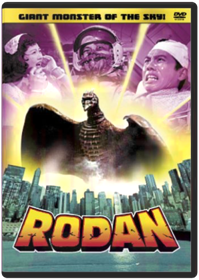
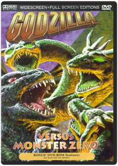
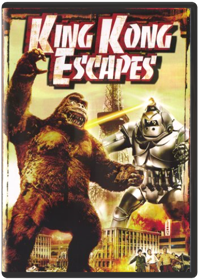
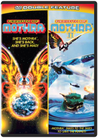

Gojira
Terry MorseB000FA4TLQThis package contains:* Godzilla (1954 Japanese Edition-english subtitles)
* King of the Monsters (1956 U.S. Release Edtion-english v/o dub)
Featuring:
* Audio commentaries
* Original trailers
*"Making of the Suite" Featurette
*"Godzilla: Story Development" featurette

Godzilla: King of the Monsters
Kazuji Taira, Ishirô Honda6304911637The first of the Godzilla movies, and the most somber and serious in tone, Godzilla, King of the Monsters was originally a 98-minute Japanese horror film, until a U.S. company bought the rights and reissued the film at its current 79 minutes, replacing sequences involving a Japanese reporter with new inserts of a dour, pipe-smoking Raymond Burr. True to the fashion of cautionary monster movies, Godzilla has arisen due to nuclear radiation—a 400-foot, fire-breathing dinosaur resurrected in Tokyo Bay—and proceeds to devastate Tokyo. Hardly a bogus building is left unbusted, nary a toy tank unmelted, by the reptilian rogue, until scientists discover another weapon of awesome destruction that just might stop him. The special effects are impressive, with the filming done so as to mask the fact that the monster is just a guy in a rubber suit, working better here than in the sequels, where they seem to have given up any pretense to that fact, in favor of flamboyant effects and battle sequences that more often than not are delightfully, unabashedly juvenile. The DVD includes a wonderful 25-minute documentary on movie monsters, pieced together from old trailers. This DVD offers your choice of Dolby 5.1 Surround or Mono, cropped-screen or letterboxed, and a plethora of other features. It is also available in a boxed set with four more of the best Godzilla flicks by director Inoshiro Honda. —Jim Gay
Godzilla Raids Again
B000MV8AJU(Action) Godzilla is back, and this time he’s not alone! Godzilla and the spiny monster Anguirus are in a heated battle on a small Japanese island. As the threat of destruction mounts, two Japanese heroes muster their courage for the final showdown with Godzilla.
Rodan
Ishirô HondaB00006FD9L
King Kong vs. Godzilla
B000P24FAEThe two mightiest monsters of all time battle in the thrilling adventure classic, King Kong vs. Godzilla. When an underhanded pharmaceutical company goes to a remote tropical island to steal King Kong for advertising purposes, they get more than they bargained for when the gigantic ape attacks an unsuspecting village and an enormous octopus. Meanwhile, far below the sea, a submarine crew unleashes reptilian terror when they melt a block of ice and release the ferocious Godzilla from his icy lair. When both destructive monsters descend on Tokyo, it's a fight that holds the future of mankind in the balance in this knock-out film that was the first theatrical release to bring its larger-than-life contenders to the big screen in glorious color.
King Kong vs. Godzilla
Ishirô Honda6305137250
Mothra vs Godzilla
B000MV8AJK(Action) After a fierce typhoon, Mothra’s gigantic egg washes ashore Japan. Meanwhile Godzilla reawakens and tramples across the land, heading straight for the big egg. Can Mothra save her offspring from Godzilla? Will Japan survive this epic monster battle?
Godzilla vs Mothra
Ryohei Fujii, Ishirô Honda630491167XMore visually splendid and imaginatively written than the other Godzilla sequels, this (the fourth in the series) starts when Mothra's gigantic egg washes ashore in Japan, having been dislodged from Mothra Island by a hurricane. Two tiny twin girls (sometimes singing like dual-diminutive Dorothy Lamours) from the island come to plead for the return of the egg by the greedy business guys who bought it for a tourist attraction, but to no avail. Radiation from nuclear testing revives Godzilla from the earth, who proceeds to threaten the egg and the cities, unless Mothra and his larvae hatched from the egg can stop him. The battle sequences between Mothra and Godzilla, and between Godzilla and the larvae, are spectacularly vivid and colorful. The DVD gives you a choice of cropped-frame or letterboxed in terrific Tohoscope, Dolby Digital 5.1 Surround or Mono, and some more extras. Oddly, the DVD contains no time code, so you never know how far into the movie you are at any given point. It is also available in a boxed set with four of the other best Godzilla flicks by director Inoshiro Honda. —Jim Gay
Ghidorah: The Three-Headed Monster
Ishiro HondaB000OCY7IU(Sci-Fi) Ghidorah, the Three-Headed Monster — A prophetess from Venus foretells cataclysmic disasters! Godzilla, Mothra and Rodan reappear in Japan, wreaking havoc! A giant meteor crashes into the mountains and the three-headed, fire-spitting space dragon King Ghidorah emerges! As the Venusian's prophecies come true, assassins from a tiny Asian kingdom hunt her down, while the Earth monsters must decide whether to settle their petty differences and join forces against the extraterrestrial enemy!
Invasion of Astro-Monster
B000OCY7IK(Sci-Fi) Invasion of Astro-Monster/Godzilla vs. Monster Zero — Aliens from Planet X borrow our monsters for a little extermination project, but they've got something else up their sleeves: world domination! Using mind-control technology, these vinyl-and-sunglasses wearing spacemen turn Godzilla, Rodan and King Ghidorah loose in Japan, demanding Earth's surrender! It's up to American astronaut F. Glenn, his galaxy-trotting buddy Fuji, and nerdy inventor Tetsuo to break the aliens' hold on the monsters and save our planet from certain doom.
Godzilla vs Monster Zero
Ryohei Fujii, Ishirô Honda630491170XIn the darkness behind Jupiter there lurks a heretofore undiscovered planet, Planet X, boasting beings of superior intelligence. The Planet X-ers are forced to live underground because of the havoc wreaked on the surface by Ghidra, the three-headed monster. Once discovered by our astronauts, including the ultra-hip Nick Adams (spouting such phrases as "That's right, baby!" with innocent conviction), the Planet X-ers propose that they transport Godzilla and Rodan from Earth to their planet to help rid them of the Ghidra menace. Only, as it turns out, they have a dastardly plan to use the bipedal behemoth and his flighty friend to conquer the Earth, harnessing their destructive force with "magnetic waves." And it almost works, but for the ingenuity... well, you get it. There can be no better way to spend a Saturday afternoon than watching monsters battle it out, while Nick Adams speaks in his accustomed English to others speaking dubbed English (really Japanese), like they all know what each other is saying. The DVD gives you a choice of cropped-screen or letterboxed in scrumptious Tohoscope, Dolby Digital 5.1 Surround or Mono, and some more extras. It is also available in a boxed set with four of the better Godzilla flicks by director Inoshiro Honda. —Jim Gay
Frankenstein Conquers The World
B000JU8H7EDuring WWII, a human heart taken from a certain lab in Europe (Dr. Frankenstein’s) is kept in a Japanese lab. When it gets exposed to the radiation of the bombing of Hiroshima, the heart grows in size, mutates and sprouts appendages, and eventually grows into a complete body and escapes. Later, a feral boy with a certain physical deformity (a large head with a flat top) is captured by scientists who refer to the boy as Frankenstein. The creature grows to the height of 20 feet, escapes again, fights police and army, and is practically indestructible. Later, a reptilian monster goes on a rampage. Eventually the Frankenstein creature and the reptile face off in a terrible battle.
Godzilla vs The Sea Monster
B00006IUGRGodzilla battles an evil sea shrimp.Genre: Science Fiction
Rating: UN
Release Date: 1-JAN-2007
Media Type: DVD

Son of Godzilla
Ryohei Fujii, Jun FukudaB00066KWCONo Description Available.Genre: Science Fiction
Rating: PG
Release Date: 6-DEC-2005
Media Type: DVD

King Kong Escapes
B000E1BXFGIt's King Kong to the rescue when a giant robot threatens to destroy Tokyo in the gripping King Kong Escapes! The action begins when the conniving Dr. Who builds a robot Kong in order to retrieve a highly radioactive element for his mysterious benefactor, Madame X. When the robot proves less than reliable, the devious duo scheme to kidnap the real Kong from his remote island home of Mondo. But interfering with their plans are the heroic trio of U.S. Cmdr. Carl Nelson, Lt. Jiro Nomura, and Kong's current crush, Lt. Susan Miller. It's up to them to outwit the greedy ape-nappers in this sci-fi adventure that takes Kong to unprecedented heights of excitement.
Destroy All Monsters
Ryohei Fujii, Ishirô HondaB00003IXDZWhen a malevolent race of Moonwomen try to put the big hurt on Earth, it's up to (take a deep breath) Godzilla, Rodan, Mothra, Anguilas, Minya, Manda, Baragon, and Spigas to resist their evil mind control and make the world safe for monster (and human) kind! Long unavailable on video, Destroy All Monsters is the crowning achievement of the Japanese monster genre, with wall-to-wall action, cheesily magnificent special effects, and a final nine-to-one battle royale (against the awesome three-headed dragon known to fans as King Ghidorah) that's guaranteed to get even the most passive viewer noisily bopping around the room. A badly dubbed, logic-defying, supremely gonzo blast, presented in a widescreen format that allows the watcher to see every single rubber scale. The original title for this quintessential creature bash translates as Godzilla Electric Battle Masterpiece, which just about says it all. —Andrew Wright
Godzilla's Revenge
Masahisa Himi, Ishirô Honda6304911688Sounds like what happens when you visit too many off-the-beaten-path sushi shops, doesn't it? Godzilla's Revenge is number 10 in the Godzilla series, directed by the first and best of the Godzilla directors, Inoshiro Honda. Essentially a childhood power fantasy, the film concerns Ishiro (the director's namesake), a youngster whose mind-tripping dreams on Monster Island help him gain the resolve to rout a gang of criminals and the neighborhood bullies who've been plaguing him. Part child's fantasy story, part monster movie with extended battle sequences, Godzilla's Revenge may be one of Honda's most consistently entertaining films, despite the fact that the colorful monster footage is reused from earlier movies. This is recommended fare for the juvenile or juvenile-at-heart. The DVD gives you a choice of cropped-frame or letterboxed in tantalizing Tohoscope, Dolby Digital 5.1 Surround or Mono, and some more extras. It is also available in a boxed set with four of the other best Godzilla flicks by director Inoshiro Honda. —Jim Gay
Godzilla vs Hedorah
Yoshimitsu BannoB0002V7OEMNo Description Available.Genre: Science Fiction
Rating: PG13
Release Date: 1-JAN-2007
Media Type: DVD

Godzilla vs Gigan
Yoshio Tamura, Jun FukudaB0002V7OECNo Description Available.Genre: Science Fiction
Rating: PG
Release Date: 1-JAN-2007
Media Type: DVD

Godzilla vs Mechagodzilla
Jun FukudaB0002V7OE2No Description Available.Genre: Science Fiction
Rating: PG
Release Date: 1-JAN-2007
Media Type: DVD

Terror of Mechagodzilla
Yoshitami Kuroiwa, Ishirô Honda6304911696In 1974, Inoshiro Honda, the original and best Godzilla director, returned after a five-year absence to direct this 20th-anniversary commemoration to Gojira (the original Japanese name for Godzilla, before the West Anglicized it). This is the fifteenth film in the Godzilla series, and the eleventh by director Honda. Yet again the aliens (from the third planet of the black hole, whatever that means; they don't really provide directions) stage a takeover of Earth, this time with the aid of Mechagodzilla and Titanosaurus (they're just what they sound like). They owe the mad scientist Mafuni for the use of Titanosaurus, who in turn owes the aliens for resurrecting his daughter, Katsura, badly hurt in an accident, albeit now as a cyborg with the ability to control their two mecha-monsters. It shapes up as the fight of the century when Godzilla is pressed into service for our side. The battling behemoths afford the most dramatic and vivid fight scenes in all of Godzilladom in this one. Let's hope the aliens don't win; they're so smug. —Jim Gay
Godzilla vs Biollante
Kazuki Ohmori, Erik Estenberg, Ace HannahB00BG4RKL6GODZILLA VS. BIOLLANTEDr. Shiragami has been genetically engineering a form of indestructible plant life using a rare supply of Godzilla cells. This experiment has brought a strange new form of plant life into existence: Biollante, massive, yet peaceful in every way...until Godzilla returns to wreak havoc upon Japan. It is only then that something within Biollante stirs and the plant must fight to save her creator and the land she loves. It's the super-beast Battle of the Century when Godzilla and Biollante come face to face in an explosive fight to the finish.
MONSTER
On January 17, 2003, a 7.8 earthquake hit Japan. Thousands were feared dead. This catastrophic event was caught on tape by two American filmmakers. Their footage—discovered in 2007—reveals that it wasn't an earthquake that struck Japan. It was something else...
MEGA SHARK VS. GIANT OCTOPUS
In the melting Arctic, two prehistoric sea creatures have been unleashed from their tombs of ice. Bigger, stronger and faster than any animal our modern world has seen, they terrorize the ocean...but when Mega Shark and Giant Octopus turn on each other, a spectacular battle for supremacy unfolds.

Godzilla vs King Ghidorah / Godzilla & Mothra: The Battle for Earth
B00IQAUO2A
Godzilla vs Mechagodzilla II
Miho Yoneda, Takao OkawaraB0006SGYLKIn response to Japan's request for a countermeasure against Godzilla, UN engineers construct Mechagodzilla, a giant robotic version of Godzilla. Nonetheless, Godzilla proves himself a force to be reckoned with against this monstrosity and battle ensues.
Godzilla vs Space Godzilla / Godzilla vs Destoroyah
Kensho Yamashita, Takao OkawaraB00003L9CBGodzilla Vs. SpacegodzillaThe powers of telepathy enter the ranks of high technology in this supernatural, super-powered Godzilla(r) adventure for the '90s! The military minds behind Japan's special Counter G Bureau enter the New Age with Project T, in which a telepathic amplifier is implanted in Godzilla(r)'s brain in order to bring the giant monster under control. And just in time! In a faraway galaxy, the mutant Space Godzilla turns its evil eyes toward earth, planning to terminate Godzilla(r) and conquer the planet for its own. With the Japanese Mafia infiltrating Counter G, the Bureau needs all the help it can get. Will Japan's greatest enemy Godzilla(r) become its closest ally? Amid all the smoke and high-tech firepower, not even the psychics know for sure!
Godzilla Vs. Destoroyah
With a super-charged blast from his nuclear past, a new Godzilla(r) emerges from his own ashes, radioactive and ready to take on Tokyo! The great lizard's nuclear energy is increasing by the minute, and a monster meltdown threatens to vaporize the planet. But when mutant micro-organisms unleash a plague of destruction, Godzilla(r) is Japan's only hope to destroy them. This victory creates Godzilla(r)'s deadliest challenge yet: the Oxygen Destroyer. And with Godzilla(r) Junior pulled into the ring, only the Super XIII can put the deep freeze on this three-way monster melee. The action is hot and the special effects are chillin' in this high-tech, high-powered Godzilla(r) thriller!

Rebirth of Mothra / Rebirth of Mothra II
Kunio Miyoshi, Okihiro YonedaB00003L9CEMegumi Kobayashi, Sayaka Yamaguchi. Mothra emerges to save the Earth from two horrific creatures in Rebirth of Mothra (1996/106 min.) and Rebirth of Mothra II (1997/100 min.). Color/NR/widescreen.
Godzilla
Roland EmmerichB000E5KUK6Matthew Broderick, Hank Azaria, Jean Reno. Godzilla came roaring back into theaters in the year 1998 as the world was introduced to a whole new version of everybody's favorite giant lizard. With an all-star cast and mind-blowing special effects, this Godzilla is more roller-coaster thrill-ride than monster movie. Either way, it's a heck of a lot of fun. 1998/color/139 min/PG-13.
Godzilla 2000
Yoshiyuki Okuhara, Takao OkawaraB00003CXLSThe first Japanese Godzilla movie released in the U.S. in 15 years! Only he can save Earth from the aliens who plan to conquer our planet in this exciting sci-fi adventure. 2000/color/99 min/PG/widescreen.
Godzilla vs Megaguirus
Masaaki TezukaB0000VAGXKGodzilla is back! This time, Japan has a new weapon: Megaguirus! Now a 3-way battle begins between Godzilla, Megaguirus and the humans beings! Will Godzilla win? Will humanity survive?
Godzilla, Mothra and King Ghidorah: Giant Monsters All-Out Attack
Shûsuke KanekoB0000VAGXUFifty years ago, the Japanese Defense Forces killed Godzilla(r) or so they thought. When a series of terrifying natural disasters begin to plague Japan, including the inexplicable offshore sinking of a U.S. submarine, a mystic old man warns his nation that Godzilla(r) has come back to destroy Japan as revenge for all the souls lost in the Pacific War. When mere military might can not squash the monster, the mystic man awakens the Holy Beasts of Yamato - King GhidorahTM, Mothra(r) and BaragonTM, sleeping giants that protected Japan in ancient times. These untamed mammoth beasts take on Godzilla(r) with frightening supernatural brute power that has been 2,000 years in the making. Tradition and technology collide in this chilling high-tech, cutting-edge fable.
Godzilla Against Mechagodzilla
B0001AVZ9YYumiko Shaku, Shin Takuma. Godzilla battles a relentless mechanical double. In Japanese with English audio & subtitles. 2002/color/84 min/NR/widescreen.
Godzilla: Tokyo S.O.S. / Godzilla: Final Wars
B00IQAUO48
Godzilla
Gareth EdwardsB00K2CHVSKIn this gritty, realistic sci-fi action epic, Godzilla returns to its roots as one of the world's most recognized monsters. Directed by Gareth Edwards and featuring an all-star international cast, this spectacular adventure pits Godzilla against malevolent creatures that, bolstered by humanity's scientific arrogance, threaten our very existence.